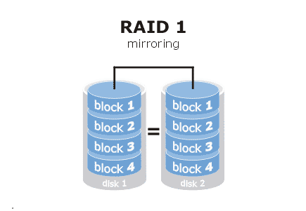
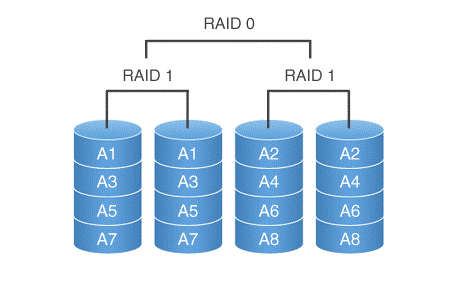

11.1. RAID
Linux
HOGENT toegepaste informatica
Thomas Parmentier, Andy Van Maele, Bert Van
Vreckem
2023-2024
RAID - Redundant Array of Independent Disks
JBOD - Just a Bunch of Disks
 JBOD
JBOD
RAID 0 - Striping
 RAID 0
RAID 0
- Secure against single theft
- Unsecure against hardware failure
RAID 1 - Mirroring

RAID 1
- Safe against HW failure
- COMPLETELY unsafe against theft
- Use volume encryption! LUKS, Bitlocker, …
- Hot spare disk = idle disk, if needed a rebuild action can start
automatically
Calculating parity
data1: 0100 1110
data2: 1010 1011
-----------------
parity: 1110 0101
Recovering data1 using parity:
data2: 1010 1011
parity: 1110 0101
-----------------
data1: 0100 1110
RAID 5 - Striping with parity
 RAID 5
RAID 5
- At least 3 disks needed
- One disk lost for capacity
- Safe against HW failure of one disk
- One disk fails => RAID 0-like situation
- If hot spare is configured, rebuild action starts
- Warning: increased load on other disks, may trigger other
failures
- Current processors make RAID 5 as fast as RAID 1 (or better!)
Parity with 4 disks
block1a: 0100 1110
block2a: 1010 1011
---------------------
parity-tmp: 1110 0101
block3a: 1101 0011
---------------------
parity: 0011 0110
Recovering block2a using parity
block3a: 1101 0011
parity: 0011 0110
---------------------
parity-tmp: 1110 0101
block1a: 0100 1110
---------------------
block2a: 1010 1011
RAID 10 - Mirroring + striping

RAID 10
- Is RAID 1 (mirroring) combined with RAID 0 (striping)
- At least 4 disks needed
- Very frequently used in enterprise environments
Software vs Hardware RAID
- Difference = where are the calculations done?
- HW RAID: dedicated RAID chip (controller - onboard or plugin
card)
- SW RAID: CPU
- Directly Attached Storage (DAS): not much use for HW RAID
- Main CPU is strong enough for added RAID functionality
- Recovery/forensic analysis is easier with SW RAID
- Network Attached Storage (NAS)/Storage Area Network (SAN): HW RAID
- Not much choice, often embedded in the device!
- Dedicated RAID controller with proprietary firmware
The big problem with HW RAID
- Proprietary firmware
- In case of data loss: recovery/forensic analysis is
difficult/impossible
- Good RAID controller duplicates config on each disk for recovery
purposes
- Not a standard! Depends on implementation
- RAID controllers are aging
- E.g. RAID 10 on Areca RAID controller is not recognized if the disks
are connected to an Adaptec RAID controller
- OR: RAID 10 on a 5 year old Areca RAID is not recognized in recend
Areca RAID controller
- RAID controller has become a single point of failure!
Software RAID
- Can be done by the OS
- Linux Software RAID (mdadm), Linux Volume Management (LVM)
- Windows Dynamic Volumes, Storage Spaces
- 3rd party software (e.g. Starwind)
- Usually easily expandable
- Recoverable
- Backwards compatible
- “Free” (included in OS)
- Independent of interface (IDE, SATA, SCSI, …)
- Fast (with modern CPUs)
Disadvantages of SW RAID
- CPU load
- OS is not easy to install on a RAID volume
- Not all RAID levels are supported
- Hot swap not always supported